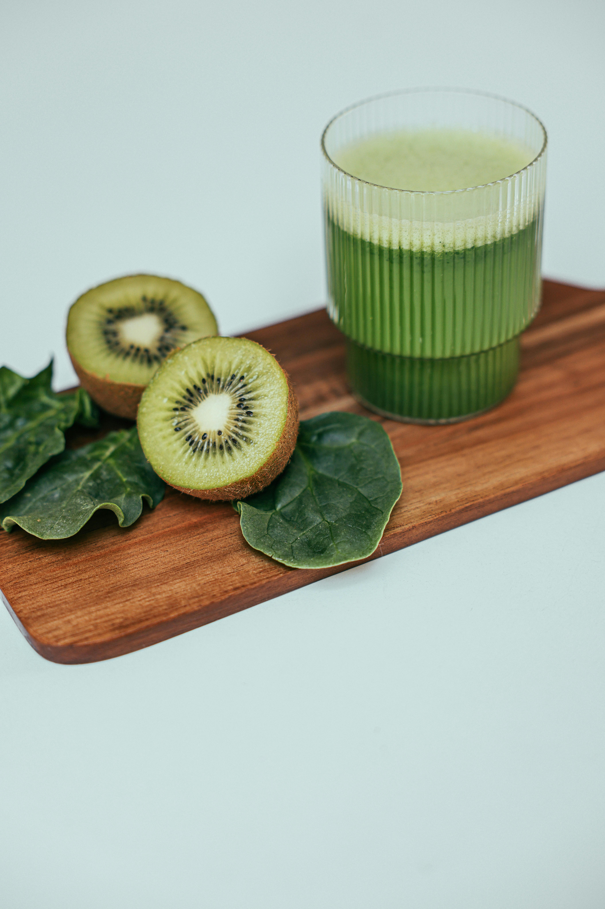
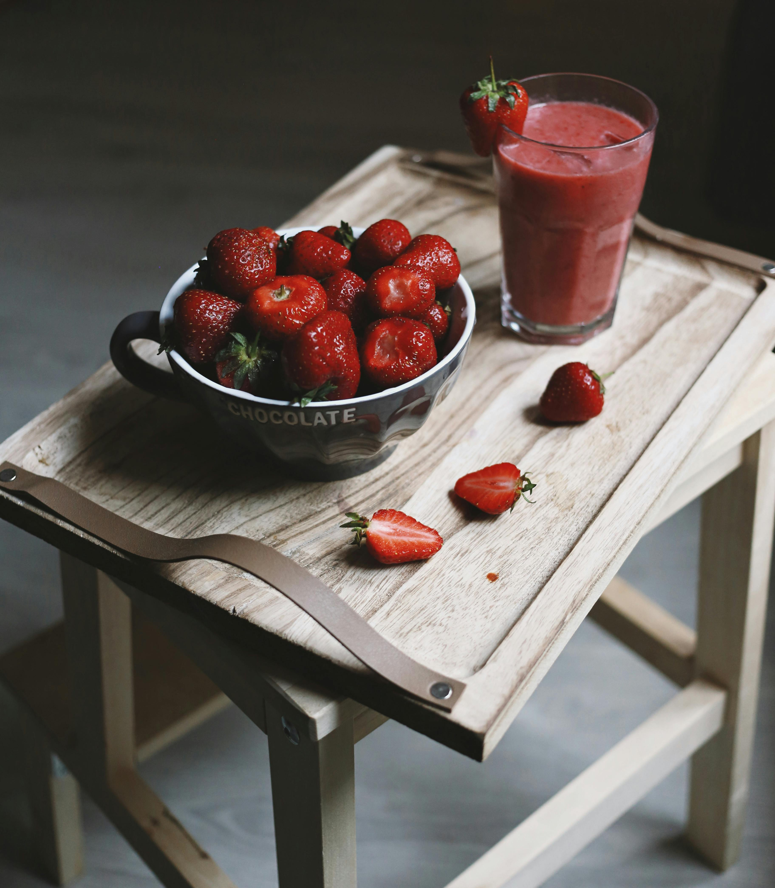
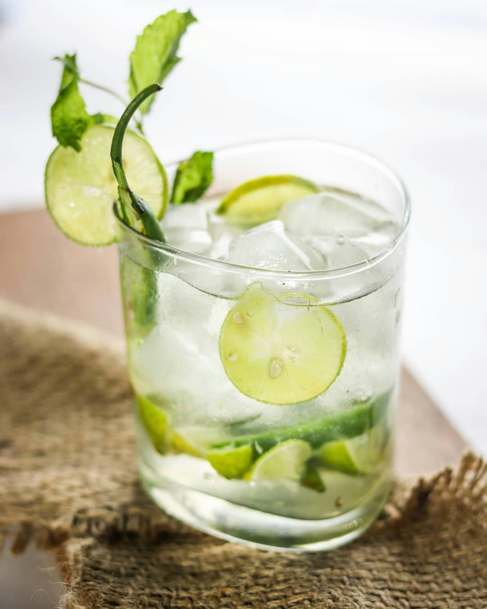
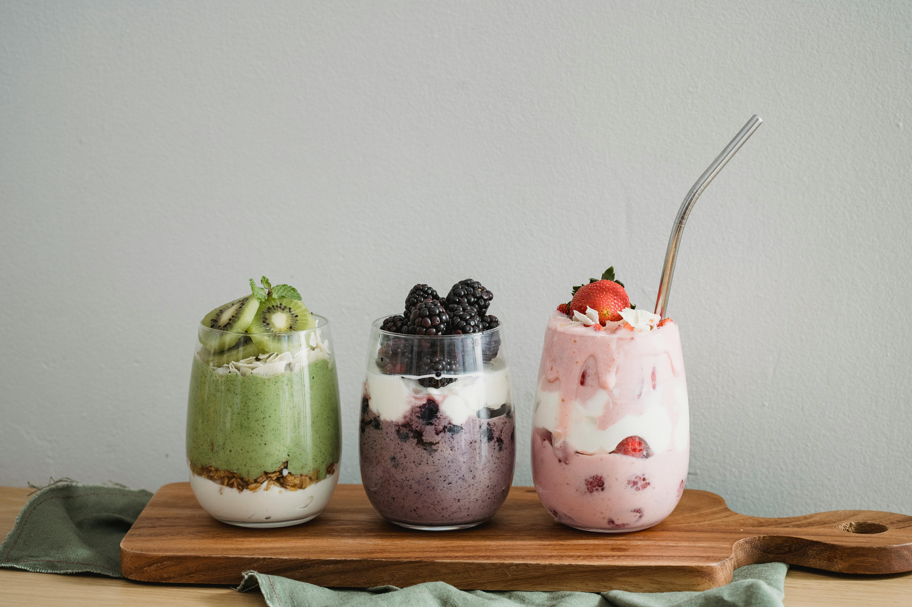

Tropical Delight Juices are known for their 100% natural and pure taste.
They offer a variety of delicious, refreshing flavors that are fl of nutritional value
and great taste.
Some of their popular juices include 100% Orange Juice, Apple Juice,
Pineapple Juice, Cranberry Juice, and Fruit Punch.
Their motto, "Pure Taste. Pure Delight.", reflects the refreshing and thirst-quenching
experience of their beverages.
They are packaged and sealed for freshness without the
need for any preservatives.
Tropical Delight was founded by Mark, who wanted to bring the delightful taste of his Caribbean roots to consumers without sacrificing the purity of the ingredients.
Today, their juices are available nationwide and even internationally
Green Goodness

Green Goodness Juices are a revitalizing blend of vibrant greens and fruits, designed to provide a healthy boost.
They typically include ingredients like spinach, kale, cucumber, apple, mango, kiwi, and celery1.
These juices are packed with essential nutrients, including vitamins C and B12, and are free from added sugars, preservatives, and artificial flavors.
Green Goodness Juices are known for their refreshing taste and nutritional benefits, making them a great choice for a healthy lifestyle. They are often enjoyed as a morning pick-me-up or an afternoon revitalizer
Berry Blast

Berry Blast Juices are a delightful blend of various berries, offering a burst of natural flavors.
They are made from 100% natural ingredients with no added sugar, preservatives, or artificial flavors.
Some of the berries included are blueberries, strawberries, raspberries, blackberries, cranberries, and goji berries.
These juices are known for their thick and pulpy texture, which adds to the refreshing taste.
They are also packed with essential nutrients like vitamins, minerals, and antioxidants, making them a healthy choice for any time of the day
Citrus Glow

Citrus Glow Juices offer a vibrant blend of citrus fruits designed to brighten your day.
The juices typically feature a mix of oranges, lemons, limes, grapefruits, and tangerines, all known for their high vitamin C content and refreshing flavors.
These juices are known for their tangy and invigorating taste, providing a natural energy boost.
They're perfect for those looking to start their day on a refreshing note or seeking a zesty pick-me-up in the afternoon.
Citrus Glow Juices also boast numerous health benefits, including antioxidants that support the immune system and help maintain healthy skin.
Custom Juices

Custom Juices are personalized beverages crafted to suit individual tastes and preferences.
They often feature a blend of fruits, vegetables, and other natural ingredients, allowing customers to create unique flavor combinations.
These juices are typically made fresh, ensuring high quality and nutritional value. They can be tailored to include specific ingredients, catering to dietary needs or personal flavor preferences.
Custom juices are a great way to enjoy a refreshing, healthy drink that's made just for you.